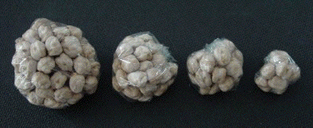

A similar experiment can be done using dry
beans (such as garbanzos), or any other hard approximately spherical objects.
Instead of weighing the beans with a scale, we estimate the mass by counting the number of beans.
Denote by N the number of beans in the largest cluster; take the mass of that cluster to
be 1. A cluster of M beans is taken to have mass
| Count out 64 of the beans into a piece of the clear plastic wrap. Tighten the wrap around the beans to approximate a sphere. Take the mass to be 1. |
| Count out 32 of the beans into a piece of the clear plastic wrap.
Tighten the wrap around the beans to approximate a sphere. Take the mass to be
|
| Count out 16 of the beans into a piece of the clear plastic wrap.
Tighten the wrap around the beans to approximate a sphere. Take the mass to be
|
| Count out 8 of the beans into a piece of the clear plastic wrap.
Tighten the wrap around the beans to approximate a sphere. Take the mass to be
|
|  |
| Bean bags made with clear plastic wrap and garbanzo beans. |
Measure the diameters of these paper balls, using a compass as a caliper. For balls that are not very close to spherical, the average of several diameters can be used. Record the masses and diameteres on the data sheets.
Plot the points
The slope can be determined manually from the graph, or with a linear regression option of a graphing calculator or a spreadsheet.
Return to Paper Ball and Bean Bag Dimension